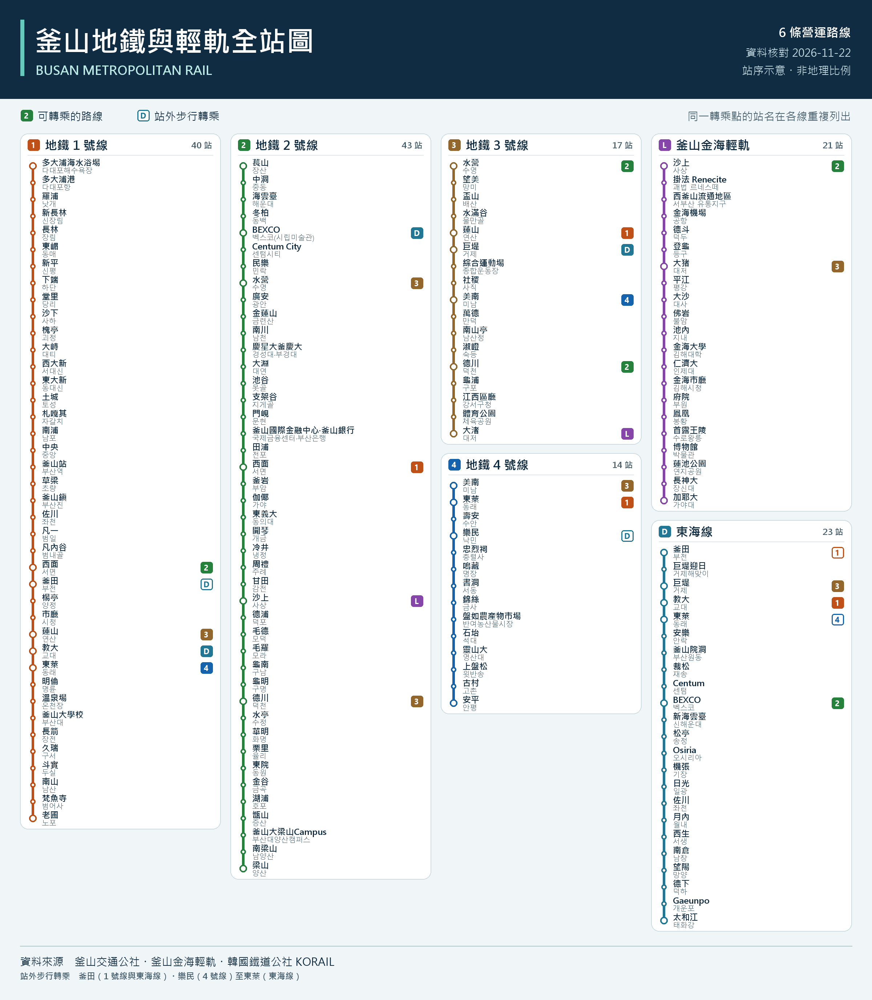

查釜山交通、換匯門市和景點。
含地鐵 1–4 號線、釜山金海輕軌和東海線全段。依站序排列，轉乘站標有可換乘的路線。

有網路時可查銀行參考牌告，換匯以店家實際報價為準。輸入 1 新台幣可換多少韓元，試算不含手續費。
以下為成人韓元票價。生效日未公開時，顯示最後核對日。
同一趟跨工具轉乘請用「已知轉乘總額」填寫。填入已含優惠的實際總額，可避免重複計費。日票比較只涵蓋地鐵 1–4 號線的獨立搭乘。